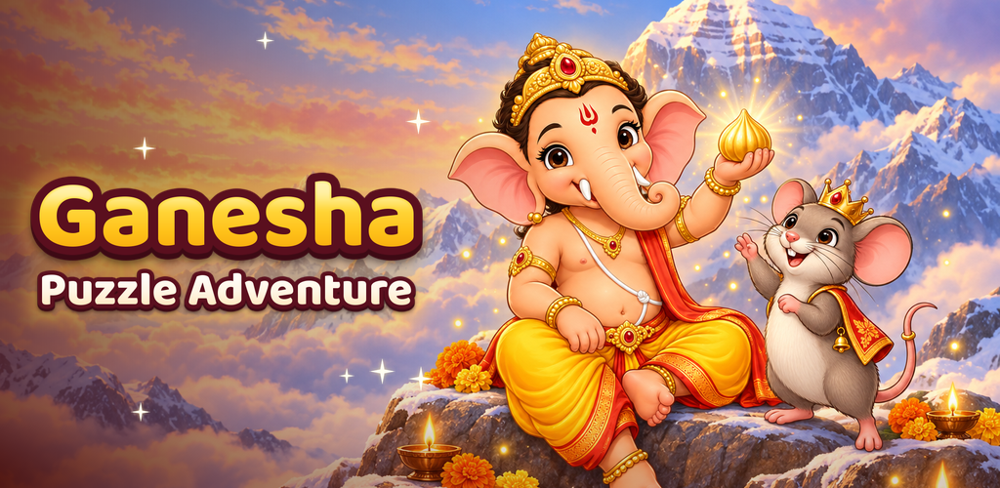

Ganesha Puzzle Adventure
गणेश पज़ल एडवेंचर
Ganpati Bappa Morya! Walk with Bal Ganesha from Maa Parvati's turmeric clay to today's Ganeshotsav, one puzzle at a time: 150 levels, 24 different puzzle games and the much-loved stories of Vighnaharta, in English or Hindi.
150 story levels10 chapters, from Mitti ka Lal to an eco-friendly visarjan.
24 puzzle typesDig water channels, play the dhol, trace ॐ, sculpt and paint a murti, cook modaks, tilt mazes and more.
Ganpati PandalBuild and decorate your own pandal, with the murti you made on the stage.
Ganeshotsav eventTen festive days every Ganesh Chaturthi, ending with the visarjan.
Katha AlbumCollect illustrated story cards of Shri Ganesha's kathas.
Daily PuzzleA fresh puzzle every day, with Mushak's hints when you need them.
हिंदी में
गणपति बप्पा मोरया! माँ पार्वती की हल्दी वाली मिट्टी से आज के गणेशोत्सव तक, बाल गणेश की कथाएँ 150 पहेलियों में। 24 तरह के पज़ल, अपना गणपति पंडाल, 10 दिन का गणेशोत्सव, कथा एल्बम और रोज़ की पहेली। हिंदी और अंग्रेज़ी दोनों में।